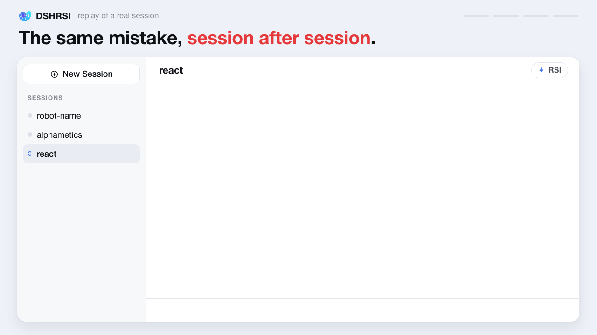

一次真实的自我改进，从第一步看起One real self-improvement, from the first step
这不是演示脚本。下面每一个时间、每一条调用、每一行代码，都来自一次评测运行留下的会话日志和插件自己的审计日志：Aider Polyglot 的 30 道 Rust 题，模型是 mimo-v2.6-flash，没有人给插件任何提示。
This is not a scripted demo. Every time, every call and every line of code below comes from the session logs of a benchmark run and from the plugin's own audit log: the 30 Rust exercises of Aider Polyglot, on mimo-v2.6-flash, with no hint given to the plugin.


提示词写 lib.rs，文件在 src/lib.rsThe task says lib.rs. The file is src/lib.rs.
评测给每道 Rust 题的提示词都以“修改提供的文件：lib.rs”结尾，而文件在 src/ 目录下。模型照着提示词去读，得到一个“找不到”，再绕回来。每个会话都是全新的，所以原版 Harness 上这件事从头到尾都在发生。一格是一个会话，按开始的先后排列。
The prompt the benchmark gives every Rust exercise ends with “modify the supplied files: lib.rs”, and the file is under src/. The model reads what the prompt names, gets “not found”, and finds its way back. Every session starts fresh, so on the stock harness this keeps happening from the first session to the last. One square is one session, in the order they started.
两组各自的 30 个会话，各按自己的开始顺序排列；把鼠标停在格子上能看到题目和时间。红色是这个会话里至少一次读 lib.rs 得到“找不到”。
The 30 sessions of each arm, each in its own start order; hover a square for the exercise and the time. Red means at least one read of lib.rs came back “not found” in that session.
第三个撞上它的会话，一步不落The third session that hit it, every step
这是 rust/macros 这道题的会话，从收到任务开始到这一轮结束。左边是时刻（UTC）和距会话开始的秒数。蓝色的几段是插件做的事，它们全部发生在第 1 步和第 2 步之间。
This is the session of the rust/macros exercise, from the task arriving to the end of the turn. On the left, the time (UTC) and the seconds since the session started. The blue entries are what the plugin did, and all of them happen between step 1 and step 2.
模型给 Harness 写的那段代码The code the model wrote for the harness
一字未改。它做两件事：读 lib.rs 失败时，在结果上附一句去哪里找；并在之后会话的提示词里加一段说明。两件都只是补充信息，放行不了任何 Harness 本来会拒绝的操作。
Unedited. It does two things: when a read of lib.rs fails, it attaches where to look to the result; and it adds a section to the prompt of later sessions. Both only add information, and neither can allow anything the harness would refuse.
之后每个会话的提示词里多出的一段What the prompt of every later session gained
这一步的结果，是下一步的起点Each step is where the next one starts
写出来只是开始。后面的会话带着它运行，也继续被同一套判断点盯着，账本决定它的去留。 Being written is only the beginning. Later sessions run with it and are watched by the same detectors, and the ledger decides what becomes of it.
这条实录说明了什么，没说明什么What this trace shows, and what it does not
- 它说明这条闭环在没人参与的情况下走得通。发现、动手、被打回、重写、校验、挂载、扩大、转正，每一步都有日志。It shows the loop closes with nobody in it. Noticing, acting, being rejected, rewriting, validating, mounting, widening and promoting each left a log entry.
- 它针对的那类失败确实少了。全机生效之后开始的 151 道题（所有语言）里，原版有 7 道撞上，装了 DSHRSI 的有 1 道，精确 McNemar 检验 p = 0.07。The failure it was written for did become rarer. In the 151 tasks (all languages) that started after it was machine-wide, 7 hit it on the stock harness and 1 with DSHRSI; exact McNemar test, p = 0.07.
- 一次读不到文件不等于一道题做不出来。这个失败的代价是一次白费的调用。两组在这 30 道 Rust 题上两次以内都全部通过。One failed read is not one failed task. What this failure costs is a wasted call. Both arms solved all 30 Rust exercises within two tries.
- 每组只跑了一次。解题数上的结果在评测页，连同检验和局限。Each arm ran once. Results on tasks solved are on the evaluation page, with the tests and the limits.
从原始日志重新取一遍Lift it out of the raw logs again
node bench/run.mjs polyglot --arm dsh --run flash-dsh-p1 --concurrency 12 # MIMO_MODEL=mimo-v2.6-flash
node bench/run.mjs polyglot --arm rsi --run flash-rsi-p1 --concurrency 12
node bench/trace.mjs --write # reads the session logs and the plugin's audit log
这一页用的数据在仓库的 bench/results/trace.json。模型每次运行写出的代码不会一样。
The data behind this page is bench/results/trace.json in the repository. The code the model writes differs from run to run.